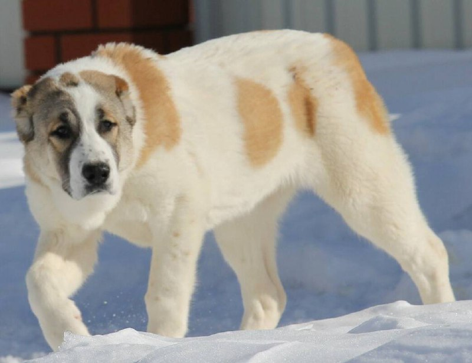

Алабай

Происхождение: Средняя Азия (Туркменистан, Казахстан и др.)
Размер: Очень крупные (рост: 65–78 см, вес: 50–80 кг)
Характер: Уверенные, независимые, преданные, могут быть агрессивны к чужим
Особенности: Природные охранники, требуют ранней социализации. Устойчивы к холоду и жаре благодаря густой шерсти. Не подходят для новичков из-за упрямства и силы
Здоровье: Склонны к дисплазии суставов, ожирению